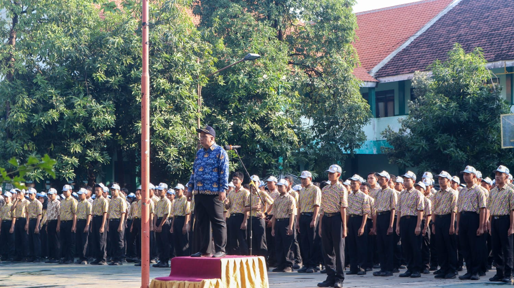
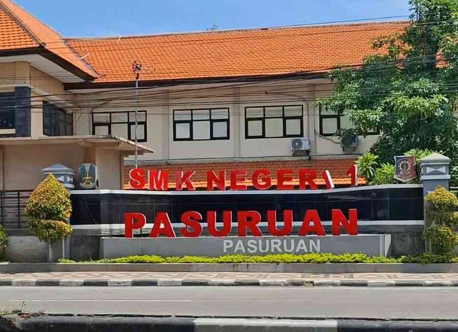

SMKN 1 Pasuruan adalah lembaga pendidikan kejuruan unggulan yang berkomitmen mencetak lulusan berkemampuan tinggi, profesional, dan siap beradaptasi dengan dunia industri serta kewirausahaan.
Platform website profil digital ini dirancang sebagai sarana informasi resmi interaktif, meningkatkan transparansi sekolah, serta menjembatani komunikasi dua arah antara pihak sekolah, siswa, orang tua, alumni, dan masyarakat umum.

Teknik Komputer dan Jaringan
Desain Komunikasi visual
Rekayasa Perangkat Lunak
Akuntansi
Manajemen Perkantoran
Bisnis Digital
Kimia Analisis
Teknik Kimia Industri